Bollettini neve · Pirenei
Pirenei: Lo zero termico decide se le montagne accumulano neve o scaricano pioggia: nei prossimi giorni la nostra previsione lo colloca sui Pirenei …
Zero termico sui Pirenei: da 2.230 m a 2.820 m, quota neve fino a 2.500 m (13 novembre)
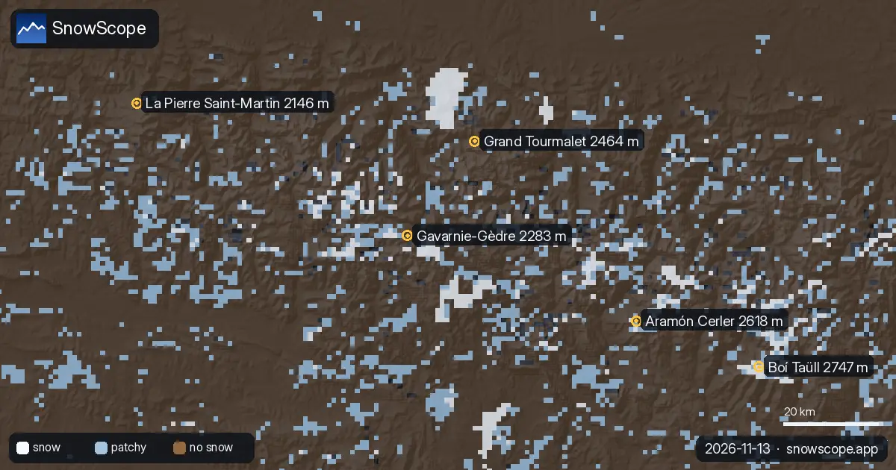
Lo zero termico decide se le montagne accumulano neve o scaricano pioggia: nei prossimi giorni la nostra previsione lo colloca sui Pirenei tra 2.230 m e 2.820 m. Il venerdì 13 novembre la quota neve a Boí Taüll arriva a 2.500 m nelle ore più miti, circa 300 m sotto quel livello. La neve in montagna è acqua trattenuta per la primavera: quello che cade ora alimenterà più tardi fiumi e invasi.
La pioggia arriverà sul manto?
La neve già al suolo sembra al sicuro dalla pioggia nei prossimi giorni: nei giorni umidi la quota neve resta abbastanza bassa in queste località.
A Baqueira-Beret (2.510 m) la previsione indica 14 mm di precipitazioni, l'acqua che arriva sulla montagna; nelle ore umide la quota neve è vicina a 2.540 m.
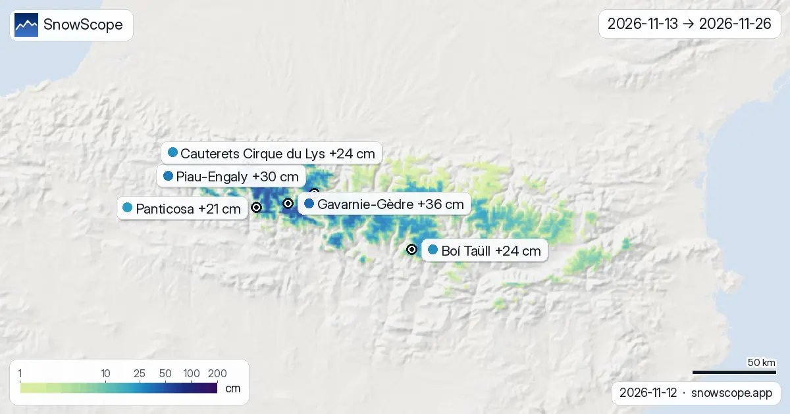
Le mappe di oggi guardano due settimane avanti sui Pirenei, dal 13 novembre al 26 novembre. Vengono da i due modelli globali che arrivano a due …
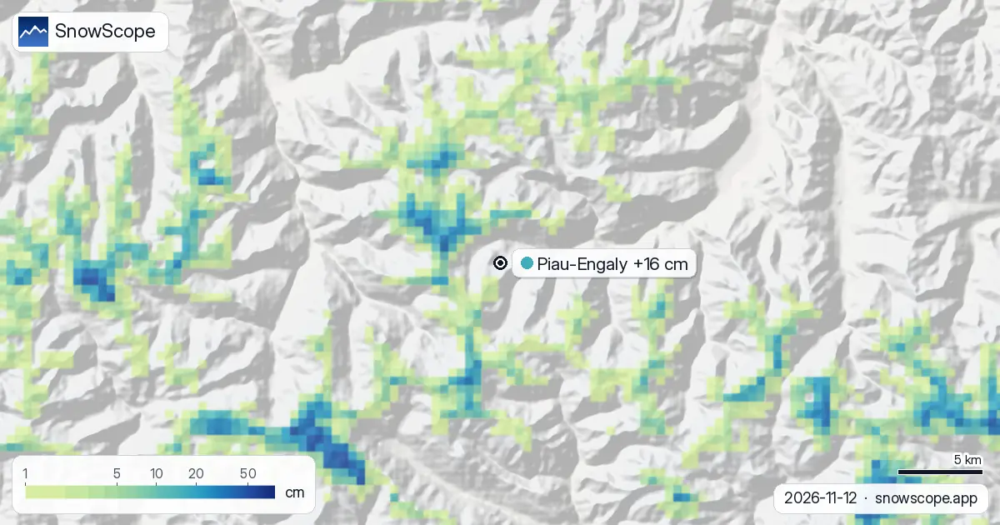
Il nostro modello divide Piau-Engaly in tre quote: 2 cm in vetta (2.527 m), 0 cm a metà montagna (2.144 m), 0 cm alla base (1.762 m). Nelle ultime 72 …
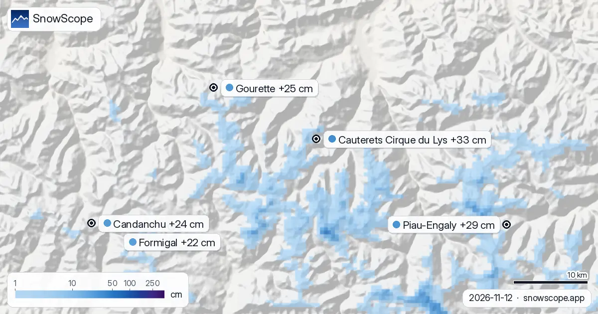
Bollettino neve sui Pirenei, 12 novembre. Guardando al 15 novembre, la previsione porta 33 cm a Cauterets Cirque du Lys, 29 cm a Piau-Engaly e 25 cm …
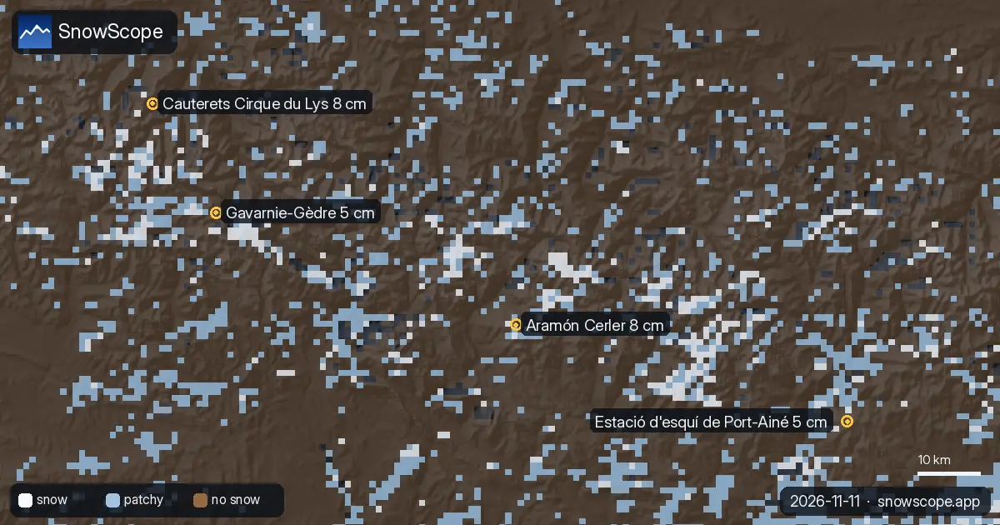
C'è più neve di un anno fa? Abbiamo confrontato oggi con il 11 novembre dell'inverno scorso in 4 località sui Pirenei: 0 hanno più neve ora, secondo …

Secondo il nostro modello neve e la previsione, oggi sui Pirenei porta neve sottile di inizio stagione e aria mite che può lasciare una crosta. Qui …
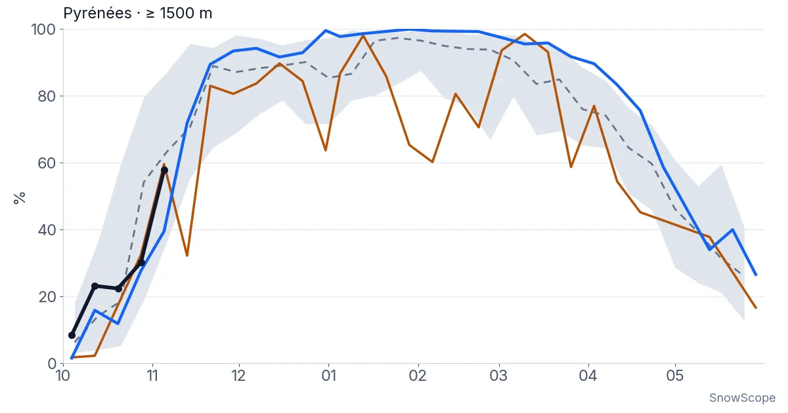
Quanto a lungo i Pirenei sono rimasti bianchi ogni inverno dal 2000-01, visti dal satellite, e l'altezza della neve in 10 stazioni con lunghe serie. Tre inverni magri di fila sono finiti nel 2025-26; questo autunno è cominciato in modo normale.
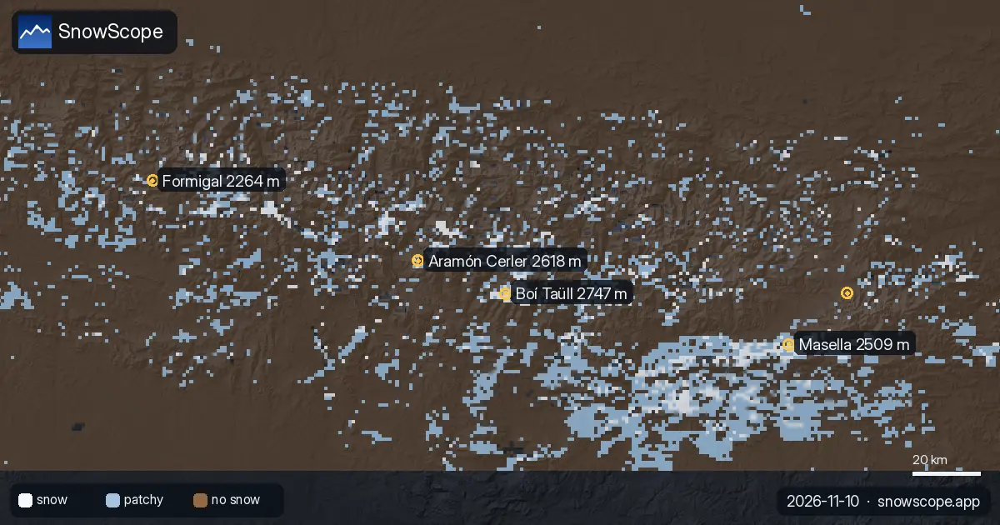
Lo zero termico sui Pirenei, prossimi giorni: tra 2.420 m e 3.710 m. La quota neve, circa 300 m più in basso, tocca il massimo di 3.400 m a Masella …
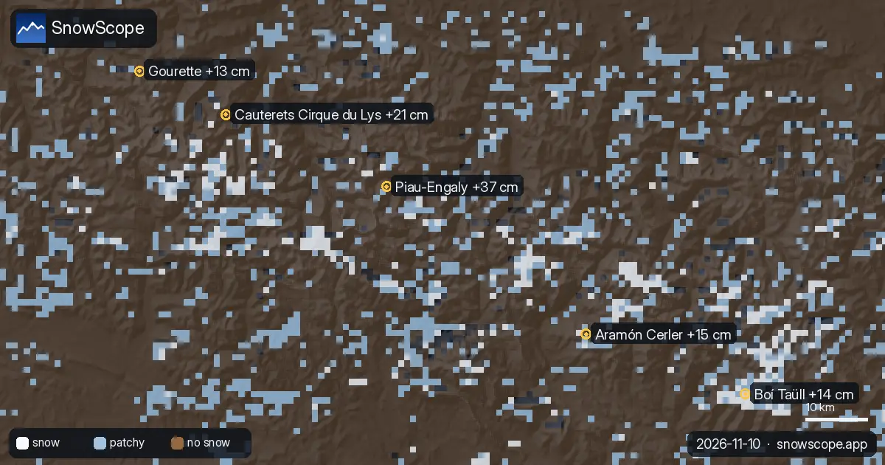
Fino a 37 cm: è quanto la nostra previsione dà a Piau-Engaly entro il 13 novembre. Fino al 13 novembre la nostra previsione indica 37 cm a …

Andorra non ha un grande aeroporto: come raggiungere Grandvalira da Barcellona o Tolosa, il tunnel dell'Envalira, la CG2 e i parcheggi.
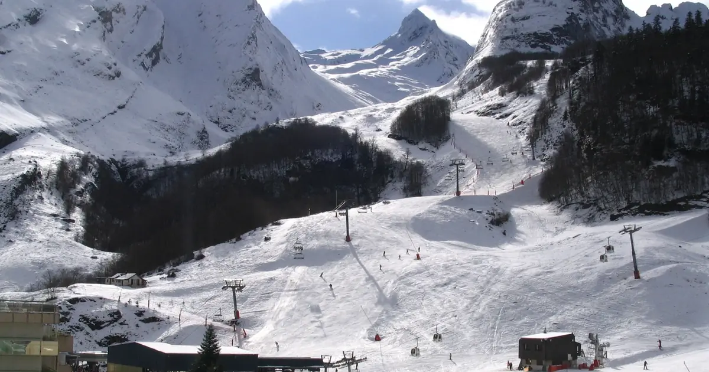
Gourette e Cauterets a confronto: quote, neve abituale per mese, settimane migliori e come arrivare, da 46 inverni passati.

Modello più previsione sui Pirenei oggi danno neve sottile di inizio stagione e aria mite che può lasciare una crosta. Cosa indossare, cosa portare e …
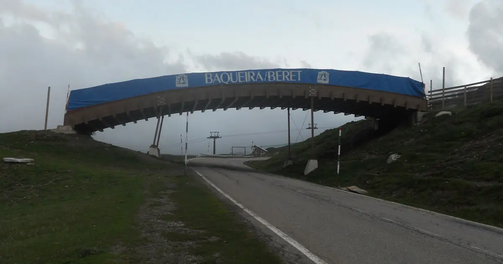
Baqueira-Beret è nella Val d'Aran, sul versante atlantico dei Pirenei. Che cosa significa per la sua neve, verificato su 46 inverni passati contro La Molina, e quando andare.
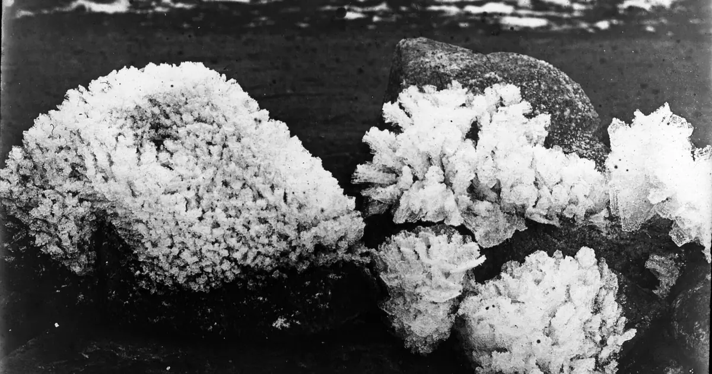
Meno giorni di neve in tutti i 120 punti studiati sui Pirenei dal 1980-81, soprattutto sotto 1.500 m: la nostra serie di 46 inverni e la ricerca.

La nostra previsione mette lo zero termico sui Pirenei tra 2.610 m e 3.840 m nei giorni a venire. Nel momento più mite della giornata la quota neve, …

Come vivere una buona giornata a Luz-Ardiden, piccolo comprensorio sopra Luz-Saint-Sauveur negli Alti Pirenei: la strada, i due settori, la neve di 46 inverni passati e le settimane da scegliere.

0 cm a 2.052 m il 7 novembre, come in molti inverni passati. Lo scorso inverno ha raggiunto un picco di 100,6 cm. Grafico interattivo e dati.


Abbiamo confrontato la neve di oggi in 4 località sui Pirenei con la stessa data in ciascuno dei 46 inverni passati. 1 sono nettamente sopra la norma.

Abbiamo combinato l'altezza neve di oggi, la neve fresca delle ultime 72 ore e la previsione per scegliere Aramón Cerler, Rasos de Peguera e Masella. …
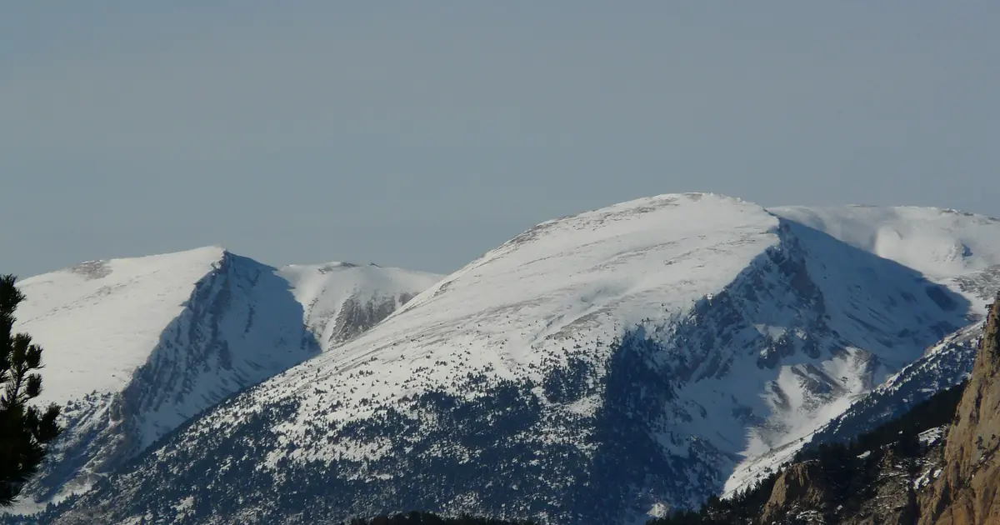
Rasos de Peguera ha ricevuto 15 cm di neve fresca nelle ultime 72 ore. Ora ha circa 20 cm sui pendii superiori, secondo il nostro modello neve.

Abbiamo combinato l'altezza neve di oggi, la neve fresca delle ultime 72 ore e la previsione per scegliere Rasos de Peguera, Aramón Cerler e Masella. …
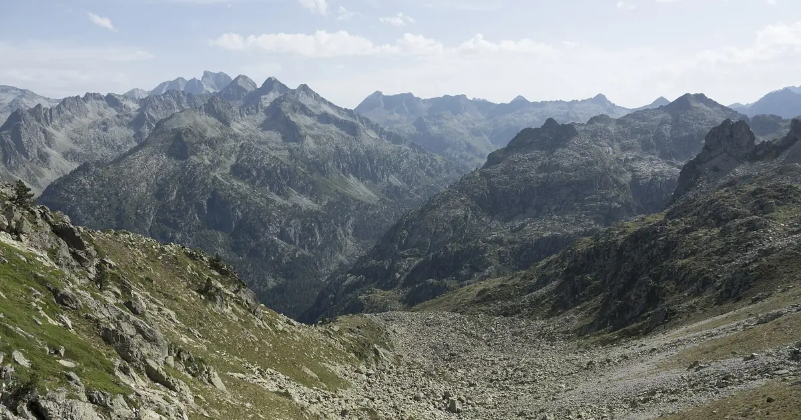
Abbiamo confrontato la neve di oggi in 4 località sui Pirenei con la stessa data in ciascuno dei 46 inverni passati. 1 sono nettamente sopra la norma.

Abbiamo combinato l'altezza neve di oggi, la neve fresca delle ultime 72 ore e la previsione per scegliere Masella, Cauterets Cirque du Lys e Aramón …
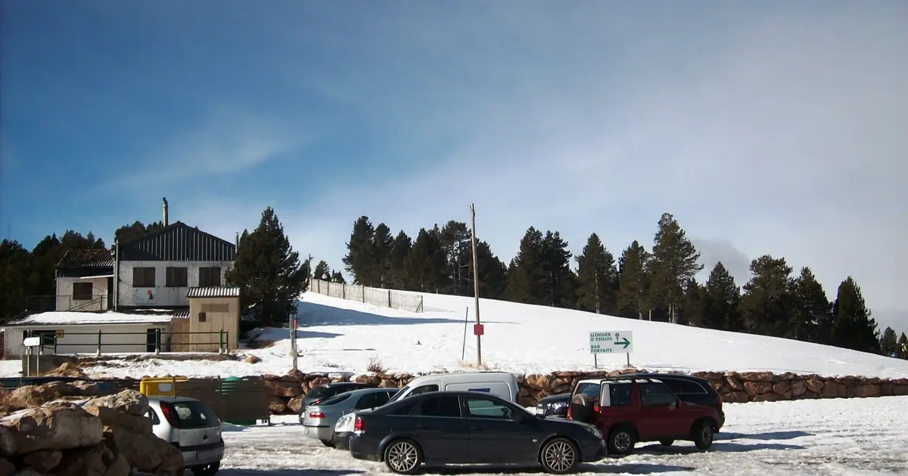
Rasos de Peguera ha ricevuto 17 cm di neve fresca nelle ultime 72 ore, di cui 17 cm nelle ultime 24 ore. Ora ha circa 13 cm sui pendii superiori, …

Abbiamo combinato l'altezza neve di oggi, la neve fresca delle ultime 72 ore e la previsione per scegliere Masella, Estació d'esquí de Port-Ainé e …